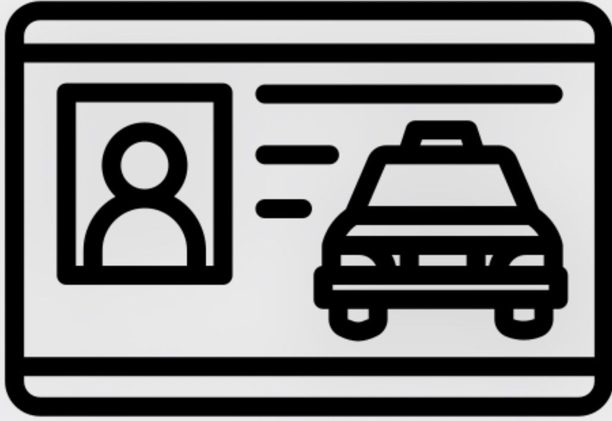

.jpeg)
Coordonnée
 | +221 78 577 31 15
| +221 78 577 31 15
 | sykhadija38@gamil.com
| sykhadija38@gamil.com
 | Keur Massar MTOA Unite 11
| Keur Massar MTOA Unite 11

| PermisCentre d'intérêt
- Lecture
- Internet
- Dessin
- Sport(fitness)
- Voyage
- Jeux Vidéo
Langues
Francais
(Professionnels)
(Professionnels)
Anglais
(Scolaire)
(Scolaire)
Wolof
(Maternelle)
(Maternelle)
Divers
Concour: Sonatel Academic,Force N,
Sama dekkuway Challenge(PGISS),ESP,
Application TER(seter),24h SIG (Esri)
Qualités
- Très bon Développeur
- Créatif
- Rigoureux
- Serieux
EXPERIENCES PROFESSIONNELLES
Projet Academique- Développement d'application
2026
- Conception et développement d’une application simple dans le cadre de ma formation en génie logiciel
- Utilisation de langages comme HTML, CSS, Algorithme et Python
- Travail en équipe avec répartition des tâches
Projet en communication digitale
2025
- Création de contenus pour les réseaux sociaux
- Gestion d’une page ou simulation de stratégie digitale
- Analyse de l’engagement et des performances
Étude sociologique (projet académique)
2024
- Réalisation d’enquêtes et collecte de données
- Analyse des comportements sociaux
- Rédaction de rapports et présentation des résultats
FORMATION
*Formation en Génie Logiciel (en cours)
Acquisition de compétences en développement informatique, programmation et conception de solutions logicielles.
* Licence en Sociologie et Communication Digitale
Étude des comportements sociaux, analyse des dynamiques sociales et maîtrise des outils de communication numérique.
* Formation en Cuisine (professionnelle / pratique)
Apprentissage des techniques culinaires de base et avancées, hygiène alimentaire, préparation de plats et gestion en cuisine.
Compétences Techniques
- Développement web : HTML, CSS (création d’interfaces simples et responsives)
- Programmation : Python (bases, logique algorithmique)
- Analyse de données : collecte, traitement et interprétation des données
- Communication digitale : création de contenus, gestion des réseaux sociaux, stratégie digitale
- Recherche sociologique : enquêtes, analyse des comportements sociaux, rédaction de rapports
- Outils bureautiques : Word, Excel, PowerPoint